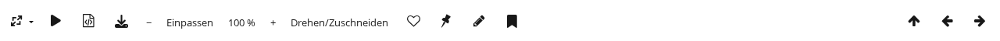
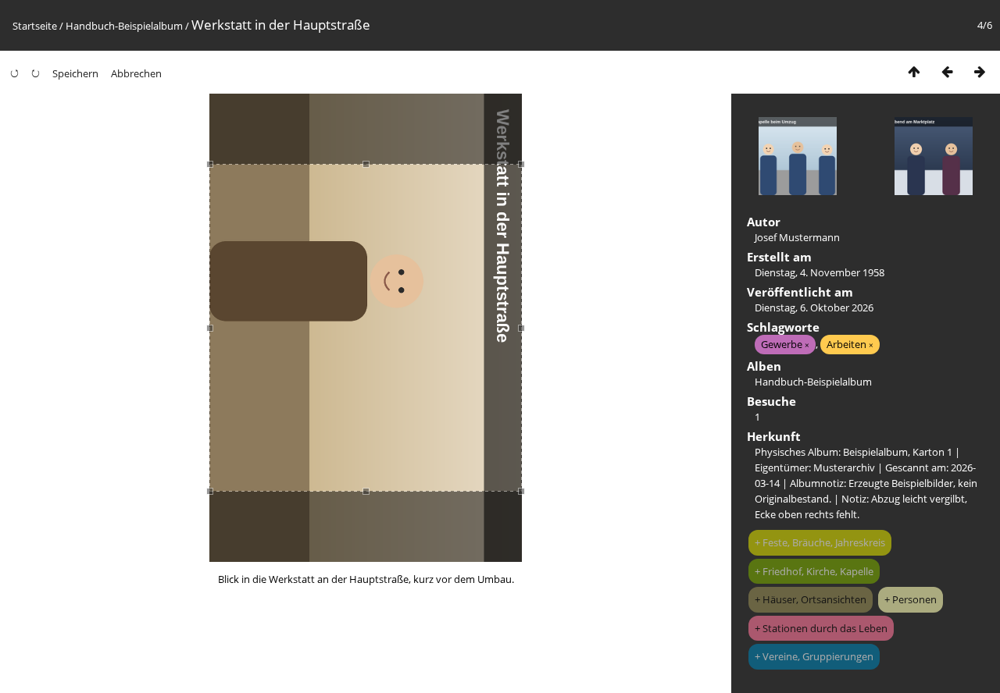

Ein seitlich eingescanntes Foto lässt sich aufrichten und ein Scanrand abschneiden. Gedreht
wird in Vierteldrehungen, zugeschnitten auf ein frei gezogenes Rechteck. Das Ergebnis wird in
die Bilddatei selbst geschrieben, nicht nur in die Anzeige. Das geschieht auf der öffentlichen
Fotoseite und ist dem Webmaster vorbehalten: andere Administratoren und angemeldete Benutzer
sehen die Schaltfläche nicht.
In der veröffentlichten Galerie ist die Funktion abgeschaltet. Gedreht und zugeschnitten
wird in der Arbeitskopie, aus der die Galerie veröffentlicht wird; das bearbeitete Foto
kommt mit der nächsten Veröffentlichung dorthin.
Ein Foto drehen und zuschneiden
Das Foto öffnen und in der Leiste über dem Bild auf Drehen/Zuschneiden
klicken. Der Kurzhinweis lautet Foto drehen oder zuschneiden.
An Stelle der übrigen Schaltflächen stehen jetzt vier in der Leiste: ↺
(Nach links drehen), ↻ (Nach rechts drehen),
Speichern und Abbrechen. Über dem Foto liegt ein
gestrichelter Rahmen, der zunächst das ganze Foto umfasst.
Mit den beiden Pfeilen das Foto so lange drehen, bis es richtig herum steht. Jeder Klick
dreht um eine Vierteldrehung. Gedreht wird zunächst nur die Vorschau.
Zum Zuschneiden den Rahmen an seinen Kanten oder Ecken mit gedrückter Maustaste nach innen
ziehen. Was außerhalb des Rahmens liegt, erscheint abgedunkelt und wird beim Speichern
abgeschnitten. Der Rahmen lässt sich auch als Ganzes verschieben.
Auf Speichern klicken. Die Seite lädt neu und zeigt das bearbeitete Foto.

Die Schaltfläche Drehen/Zuschneiden in der Leiste über dem Foto.

Nach rechts gedreht, oben und unten wird ein Streifen abgeschnitten.
Erst gedreht, dann zugeschnitten: der Rahmen liegt immer auf dem Foto, wie es gerade gedreht
zu sehen ist, und genau dieser Ausschnitt wird gespeichert. Wird nach dem Ziehen des Rahmens
noch einmal gedreht, dreht sich der Rahmen mit.
Solange der Bearbeitungsmodus offen ist, lässt sich das Foto nicht vergrößern, ein Klick auf
das Foto führt nicht zum nächsten Foto und die Rahmen der Personen sind ausgeblendet. War
gerade der Markierungsmodus für Personen offen, wird er beim Öffnen beendet.
Abbrechen
Abbrechen oder Esc verlässt den Bearbeitungsmodus. Die
Vorschau springt zurück, an der Datei ändert sich nichts.
Ein Klick neben den Rahmen hebt den Zuschnitt auf: das ganze Foto bleibt erhalten.
Speichern ohne Drehung und ohne Zuschnitt verlässt den Modus ebenfalls,
ohne etwas zu schreiben.
Rückfragen vor dem Speichern
In zwei Fällen fragt die Seite vor dem Speichern nach. Mit OK wird
gespeichert, mit Abbrechen bleibt die Datei unverändert und der
Bearbeitungsmodus offen.
Diese Personen-Markierungen werden entfernt: mit den Namen dahinter. Das kommt vor,
wenn der Zuschnitt ein markiertes Gesicht ganz oder zu mehr als der Hälfte abschneidet. Diese Markierungen
werden beim Speichern gelöscht. Alle anderen Markierungen wandern mit: nach dem Drehen und
Zuschneiden sitzen ihre Rahmen wieder auf denselben Gesichtern.
Beim Speichern wird das JPEG neu komprimiert, dabei geht etwas Bildqualität
verloren. Das betrifft nur Fotos im JPEG-Format, und zwar bei jedem Speichern erneut.
Ein Foto im JPEG-Format daher möglichst in einem Durchgang drehen und zuschneiden.
Kommen beide Fälle zusammen, stehen beide Hinweise in derselben Rückfrage.
Rückgängig machen
Eine Schaltfläche zum Rückgängigmachen gibt es nicht. Vor jedem Speichern legt die Galerie aber
eine Kopie der unveränderten Datei an. Ein bearbeitetes Foto lässt sich mit dieser Kopie
wiederherstellen; das ist ein Fall für die Serververwaltung.
Wenn die Schaltfläche grau ist
Ist Drehen/Zuschneiden ausgegraut, kann dieses Foto nicht bearbeitet werden.
Der Kurzhinweis und ein Klick auf die Schaltfläche nennen den Grund:
Dieser Dateityp kann nicht bearbeitet werden. Bearbeiten lassen sich nur Fotos im
PNG- und im JPEG-Format.
exiftool ist auf diesem Server nicht vorhanden, deshalb kann das Foto nicht bearbeitet
werden. oder exec() ist auf diesem Server abgeschaltet, deshalb kann das Foto nicht
bearbeitet werden. Beides ist ein Fall für die Serververwaltung.